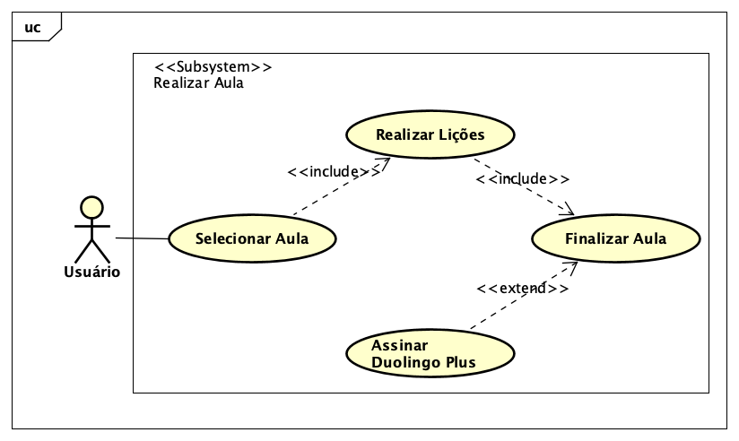
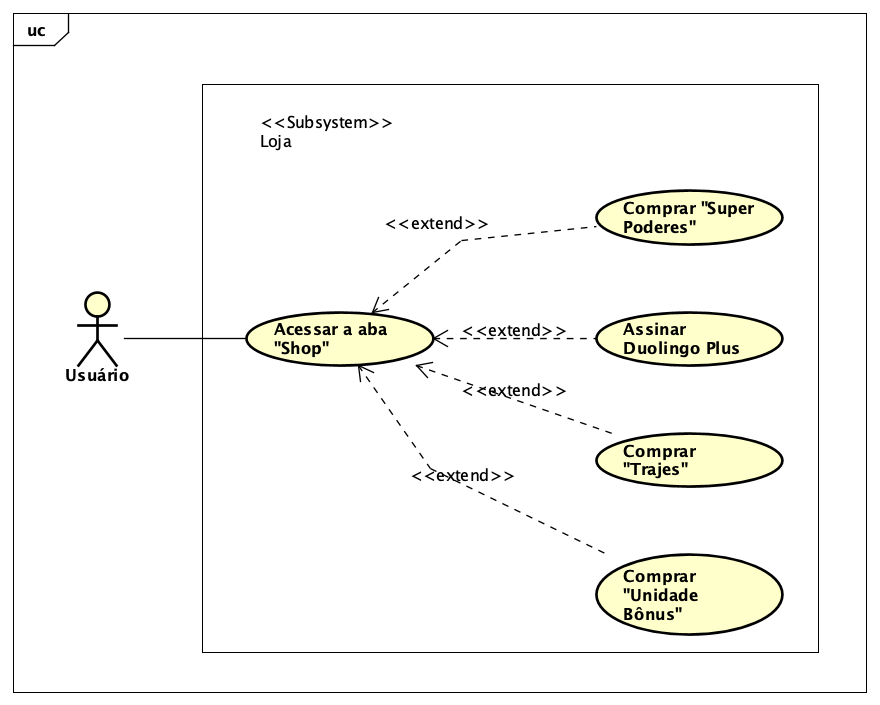
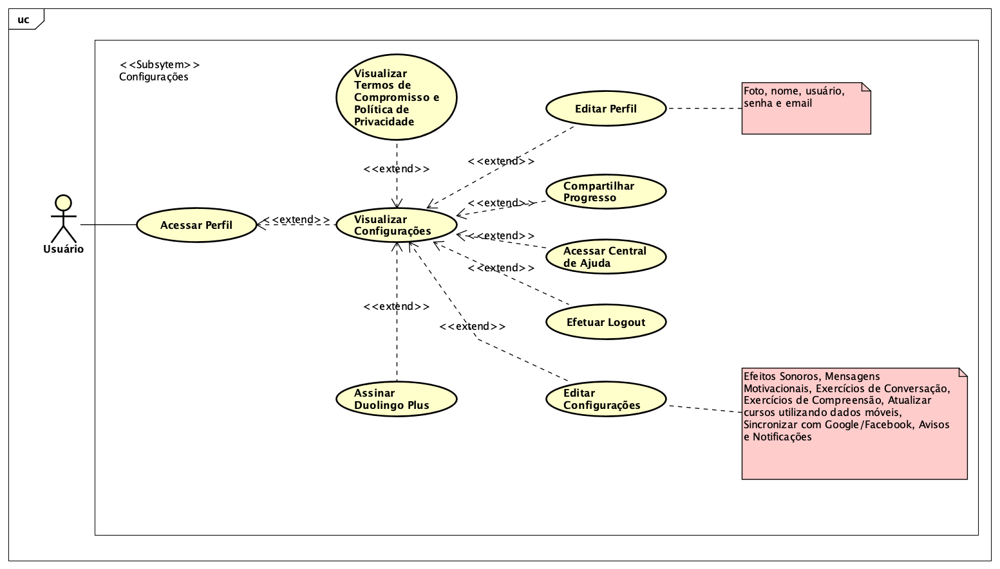

Casos de Uso
Introdução
Casos de Uso são utilizados para descrever um conjunto de ações(casos de uso) que um sistema ou um conjunto de sistemas(sujeito) deve desempenhar em colaboração com um ou mais usuários externos ao sistema(ator). Cada caso de uso deverá prover algum resultado observável e de valor para os atores ou outros interessados do sistema.
Metodologia
Para criação dos casos de uso foram identificados e analisados os documentos de elicitação de requisitos gerados na sprint anterior. A partir disso, foram feitos os casos de uso utilizando a ferramenta Astah.
Casos de Uso & Especificação
Caso de Uso - Geral

UC01 - Fazer Login

| UC01 | Fazer Login |
|---|---|
| Versão | Atual: 1.0 (25/09) Anterior: -- |
| Autor(es) | Luis Gustavo e Vitor Alves |
| Descrição | Fazer Login no Duolingo |
| Ator(es) | > Usuário > Duolingo |
| Pré condições | > Usuário estar deslogado no aplicativo |
| Fluxo principal | > Usuário acessa o Duolingo > Usuário clica no botão "Já tenho uma conta" > Usuário insere os dados de email ou nome de usuário e senha > Usuário clica no botão "Entrar" > Os dados de login são autenticados |
| Fluxos alternativos | Fluxo Alternativo 1 - Cadastro: > Usuário acessa o Duolingo > Usuário clica no botão "Início" > Usuário segue os passos para realizar o cadastro > O usuário é logado automaticamente ao criar seu cadastro |
| Fluxos de exceção | Fluxo de Exceção 1 - Dados de Login inválidos: > Aplicativo apresentar uma mensagem de erro avisando que não foi possível fazer o Login Fluxo de Excecão 2 - Usuário esqueceu a senha: > Usuário clica no botão "Esqueci a Senha" > Usuário insere email para recuperar a senha > É feita uma validação para identificar se existe um usuário cadastrado com aquele email > É enviado um email para o usuário redefinir sua senha |
| Pós condições | Usuário fica logado no Duolingo e é direcionado para a aba de aulas |
| Rastreabilidade | INT02 |
UC02 - Cadastrar Usuário

| UC02 | Cadastrar usuário |
|---|---|
| Versão | Atual: 1.0 (26/09) Anterior: -- |
| Autor(es) | Luis Gustavo e Vitor Alves |
| Descrição | Criar cadastro para um usuário |
| Ator(es) | > Usuário > Duolingo |
| Pré condições | > Usuário estar deslogado no aplicativo |
| Fluxo principal | > Usuário acessa o Duolingo > Usuário clica no botão "Início" > Usuário insere do curso(idioma que deseja apreder, motivo de estar aprendendo um idioma, meta(minutos de estudo por dia) e caminho(aprender do início ou fazer um teste de nivelamento)) > Usuário segue os passos para realizar uma aula > Usuário insere as informações de perfil(idade, nome, email e senha) > Os dados de cadastro são autenticados |
| Fluxos alternativos | Fluxo Alternativo 1 - Usuário realiza mais aulas: > Usuário acessa o Duolingo > Usuário clica no botão "Início" > > Usuário insere do curso(idioma que deseja apreder, motivo de estar aprendendo um idioma, meta(minutos de estudo por dia) e caminho(aprender do início ou fazer um teste de nivelamento)) > Usuário segue os passos para realizar uma aula > Usuário clica no botão "Depois" > > Usuário segue os passos para realizar uma aula > Usuário clica no botão "Criar Perfil" > Usuário segue os passos para realizar uma aula > Usuário insere as informações de perfil(idade, nome, email e senha) > Os dados de cadastro são autenticados |
| Fluxos de exceção | Fluxo de Exceção 1 - Email já cadastrado: > Aplicativo mostra que já existe um usuário cadastrado com esse email e fornece o campo de senha para fazer login nessa conta já cadastrada Fluxo de Excecão 2 - Email inválido: > Aplicativo apresenta uma mensagem de erro pedindo para o usuário inserir um email válido Fluxo de Excecão 3 - Idade inválida, negativa ou muito alta: > Aplicativo apresenta uma mensagem de erro pedindo para o usuário inserir uma idade válida |
| Pós condições | Usuário fica logado no Duolingo e é direcionado para a aba de aulas |
| Rastreabilidade | INT02 |
UC03 - Visualizar Perfil

| UC03 | |
|---|---|
| Versão | Atual: 2.0 (04/11) Anterior: 1.0 (28/09) |
| Autor(es) | Atual: Luis Gustavo Anterior: Francisco Heronildo e Vitor Meireles |
| Descrição | Acessar Pefil do Duolingo |
| Ator(es) | > Usuário > Duolingo |
| Pré condições | > Usuário estar cadastrado no aplicativo |
| Fluxo principal | > Usuário acessa o Duolingo > Usuário clica no ícone do seu "Perfil" |
| Fluxos alternativos | -- |
| Fluxos de exceção | Fluxo de Exceção 1 - Não há conexão com a Internet: > Usuário acessa o Duolingo > Usuário clica no ícone do seu "Perfil" > Aplicativo apresenta um alerta dizendo que não há conexão com a internet |
| Pós condições | Usuário fica logado no Duolingo e consegue acompanhar os XP's que o amigo adquire |
| Rastreabilidade | AP09 |
UC04 - Seguir Amigos

| UC04 | |
|---|---|
| Versão | Atual: 2.0 (04/11) Anterior: 1.0 (28/09) |
| Autor(es) | Atual: Luis Gustavo Anterior: Francisco Heronildo e Vitor Meireles |
| Descrição | Seguir Amigos |
| Ator(es) | > Usuário > Duolingo |
| Pré condições | > Usuário estar cadastrado no aplicativo |
| Fluxo principal | > Usuário acessa o Duolingo > Usuário clica no ícone do seu "Perfil" > Usuário acessar a aba "Amigos" > Usuário clica em "Adicionar" > Usuário clica em "Procurar Amigo" > Usuário digita o nome do usuário que quer encontar > Usuário clica em "Seguir" |
| Fluxos alternativos | Fluxo Alternativo 1 - Adicionar Amigos: > Usuário acessa o Duolingo > Usuário clica no ícone do seu "Perfil" > Usuário clica na aba "Amigos" > Usuário clica em "Adicionar" > Usuário clica em "Convidar um amigo" > Usuário insere o email do amigo Fluxo Alternativo 2 - Adicionar Amigos pelo site: > Usuário acessa o Duolingo > Usuário clica em "Enviar Convite" > Usuário insere o email do amigo Fluxo Alternativo 3 - Adicionar Amigos pelo Facebook: > Usuário acessa o Duolingo > Usuário clica em "Encontre Amigos no Facebook" > Autorize o Facebook Fluxo Alternativo 4 - Convidar Amigos > Usuário clica no ícone do seu "Perfil" > Usuário clica na aba "Amigos" > Usuário clica em "Adicionar" > Usuário clica em "Convidar um amigo" Usuário enviar um convite através de alguma rede social ou aplicativo de mensagem |
| Fluxos de exceção | Fluxo de Exceção 1 - Nome ou email inválido: > Aplicativo apresenta uma mensagem de erro avisando que não foi possível encontrar o usuário desejado Fluxo de Exceção 1 - Não há conexão com a internet: > Aplicativo apresenta um alerta avisando que não há conexão com a internet |
| Pós condições | Usuário fica logado no Duolingo e consegue acompanhar os XP's que o amigo adquire |
| Rastreabilidade | AD04 |
UC05 - Selecionar Curso

| UC05 | Selecionar Curso |
|---|---|
| Versão | Atual: 2.0 (04/11) Anterior: 1.0 (29/09) |
| Autor(es) | Atuak: Luis Gustavo Anterior: Francisco Heronildo e Vitor Meireles |
| Descrição | Usuário escolher o idioma que quer aprender |
| Ator(es) | > Usuário |
| Pré condições | > Usuário estar logado no aplicativo |
| Fluxo principal | > Usuário acessa o Duolingo > Usuário clica na bandeira do curso atual > Usuário clica no curso que deseja |
| Fluxos alternativos | Fluxo Alternativo 1 - Escolher mais cursos: > Usuário acessa o Duolingo > Usuário clica no ícone da bandeira de seu curso > Usuário clica em "Curso" ou "Adicionar um novo curso" > Usuário adiciona outro curso |
| Fluxos de exceção | Fluxo de Exceção 1 - Não há conexão com a internet > Usuário acessa o Duolingo > Usuário clica na bandeira do curso atual > Aplicativo apresenta uma alerta dizendo que não é possível selecionar cursos offline |
| Pós condições | Usuário é direcionado para a aba de aulas |
| Rastreabilidade | Q01 |
UC06 - Realizar Aula

| UC06 | Aulas |
|---|---|
| Versão | Atual: 2.0 (09/11) Anterior: 1.0 (29/09) |
| Autor(es) | Atual: Luis Gustavo Anterior: Francisco Heronildo e Vitor Meireles |
| Descrição | Usuário deve escolher e realizar uma aula |
| Ator(es) | > Usuário |
| Pré condições | > Usuário estar cadastrado no aplicativo |
| Fluxo principal | > Usuário acessa o Duolingo > Usuário clica na aula disponível do curso escolhido > Usuário clica em "Começar" > E as lições são apresentadas progressivamente |
| Fluxos alternativos | --- |
| Fluxos de exceção | Fluxo de Exceção 1 - Não há conexão com a internet > Usuário acessa o Duolingo > Usuário clica na aula disponível do curso escolhido > Usuário clica em "Começar" > Aplicativo apresenta uma alerta dizendo que não é possível selecionar cursos offline |
| Pós condições | Usuário pode abandonar a aula e retomar depois |
| Rastreabilidade | ENT03 |
UC07 - Acessar Loja

| UC07 | Loja |
|---|---|
| Versão | Atual: 2.0 (09/11) Anterior: 1.0 (30/09) |
| Autor(es) | Atual: Luis Gustavo Anterior: Brian Lui e Lude Ribeiro |
| Descrição | Usuário vai acessar a loja |
| Ator(es) | > Usuário |
| Pré condições | > Usuário estar cadastrado no aplicativo |
| Fluxo principal | > Usuário acessa o Duolingo > Usuário clica no botão "Shop" |
| Fluxos alternativos | Fluxo Alternativo 1 - Usuário compra Super Poder: > Usuário acessa o Duolingo > Usuário clica no botão "Shop" > Comprar Super Poder Usuário Clica em "Adquirir" Fluxo Alternativo 2 - Usuário compra Traje: > Usuário acessa o Duolingo > Usuário clica no botão "Shop" > Comprar Traje Usuário Clica em "Adquirir" Fluxo Alternativo 3 - Usuário compra Unidade Bônus: > Usuário acessa o Duolingo > Usuário clica no botão "Shop" > Comprar Unidade Bônus Usuário Clica em "Adquirir" |
| Fluxos de exceção | Fluxo de Excessão 1 - Não há conexão com a internet: > Usuário acessa o Duolingo > Usuário clica no botão "Shop" > Comprar Algo da Loja Aparece um alerta dizendo que não há conexão com a internet Fluxo de Excessão 1 - Não tem moedas suficiente: > Usuário acessa o Duolingo > Usuário clica no botão "Shop" > Comprar Algo da Loja Aparece um alerta dizendo que o usuário não consegue comprar o item pois não tem moedas suficientes |
| Pós condições | Usuário recebe o item que comprou |
| Rastreabilidade | ENT11 |
UC08 - Ranking

| UC08 | Ranking |
|---|---|
| Versão | Atual: 2.0 (09/11) Anterior: 1.0 (30/09) |
| Autor(es) | Atual: Luis Gustavo Anterior: Brian Lui e Lude Ribeiro |
| Descrição | Usuário irá ver a sua posição no Ranking |
| Ator(es) | > Usuário |
| Pré condições | > Usuário estar cadastrado no aplicativo |
| Fluxo principal | > Usuário acessa o Duolingo > Usuário clica no botão "Leaderboards" > E é apresentado uma tabela do Ranking |
| Fluxos alternativos | --- |
| Fluxos de exceção | Fluxo de Exceção 1 - Menos de 10 Lições Completas: > Aplicativo apresentar uma mensagem avisando para o Usuário completar no mínimo 10 Lições para começar a competir e assim fazer parte do Ranking Fluxo de Exceção 1 - Menos de 10 Lições Completas: > Aplicativo apresentar uma mensagem avisando para o Usuário que não há conexão com a internet |
| Pós condições | Usuário irá ver o Ranking |
| Rastreabilidade | ST06 |
UC09 - Configurações

| UC09 | Configurações |
|---|---|
| Versão | Atual: 2.0 (09/11) Anterior: 1.0 (30/09) |
| Autor(es) | Atual: Luis Gustavo Anterior: Brian Lui e Lude Ribeiro |
| Descrição | Usuário irá fazer alguma configuração no Duolingo |
| Ator(es) | > Usuário |
| Pré condições | > Usuário estar cadastrado no aplicativo |
| Fluxo principal | > Usuário acessa o Duolingo > Usuário clica no botão "Perfil" > Usuário clica em "Configurações" > E serão apresentadas as possíveis configurações > Usuário irá alterar dados do Perfil |
| Fluxos alternativos | Fluxo Alternativo 1 - Alterar Objetivos Diários: > Usuário acessa o Duolingo > Usuário clica no botão "Perfil" > Usuário clica em "Configurações" > E serão apresentadas as possíveis configurações > Usuário irá alterar dados dos Objetivos Diários Fluxo Alternativo 2 - Alterar dados Gerais: > Usuário acessa o Duolingo > Usuário clica no botão "Perfil" > Usuário clica em "Configurações" > E serão apresentadas as possíveis configurações > Usuário irá alterar dados gerais Fluxo Alternativo 3 - Alterar dados de Acessibilidade: > Usuário acessa o Duolingo > Usuário clica no botão "Perfil" > Usuário clica em "Configurações" > E serão apresentadas as possíveis configurações > Usuário irá alterar dados de Acessibilidade Fluxo Alternativo 4 - Alterar dados de Notificações: > Usuário acessa o Duolingo > Usuário clica no botão "Perfil" > Usuário clica em "Configurações" > E serão apresentadas as possíveis configurações > Usuário irá alterar dados de Notificações |
| Fluxos de exceção | --- |
| Pós condições | Configurações são realizadas |
| Rastreabilidade | Q06 |
| Casos de Uso | |
|---|---|
| Versão | Atual: 2.0 (09/11/2019) Atual: 1.0 (30/09/2019) |
| Descrição | Especificação dos Requisitos Funcionais |
Referências
SERRANO, Maurício; SERRANO, Milene. Requisitos - Aula 11. 1º/2019. 40 slides. Material apresentado para a disciplina de Requisitos de Software no curso de Engenharia de Software da UnB, FGA.